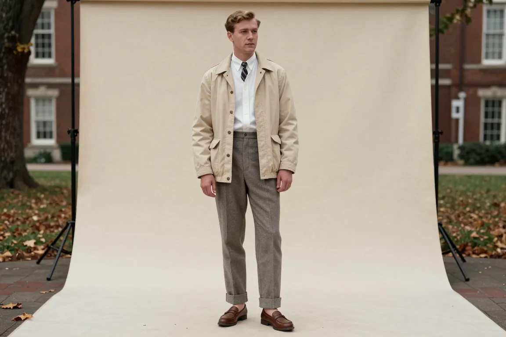

мода · 1950–1969 · также: Облик Лиги плюща, Американский трэд, Стиль с естественным плечом, Одежда восточного истеблишмента
Одежда американского студента колледжа: неподбитый пиджак-мешок с естественным плечом, оксфордская рубашка на пуговицах, чиносы и фланелевые брюки, которые носят легко.

Главная идея
Мужская одежда проста, слегка поношена и сделана надолго; она показывает, что человек свой, и не показывает, что он старается.
Принципы дизайна
Кройте пиджак прямым мешком с естественным плечом и без подплечников.
Берите застёжку «три на две» с мягким лацканом и один шлиц сзади.
Носите рубашку из оксфордской ткани с воротником на пуговицах, закатывающимся мягкой дугой.
Сочетайте пиджак с серыми фланелевыми брюками или хлопковыми чиносами без складок и с манжетой 4 см.
Выбирайте твид, фланель или сиркер по сезону, а хлопковый оксфорд в бледную полоску.
Добавляйте вязаный галстук, шетландский джемпер или галстук в полоску репп в двух-трёх цветах.
Держите обувь из коричневой кожи на толстой подошве и давайте ей стариться.